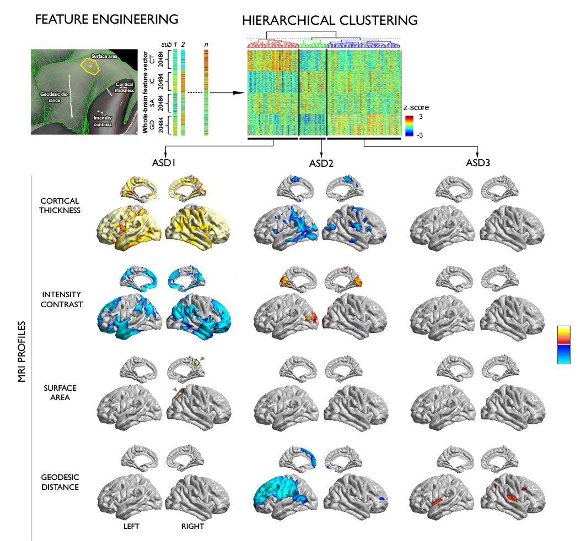
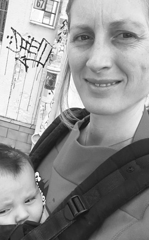

MICA
Multimodal Imaging and Connectome Analysis Lab
Multimodal Imaging and Connectome Analysis Lab


We develop integrated neuroimaging and network analysis approaches to study drug-resistant epilepsy and autism, two prevalent, detrimental, and heterogenous conditions affecting young people. Based on statistical learning techniques, we develop novel and effective procedures for disease subtyping, diagnostics, and prognostics.  Ongoing work to subtype indviduals with autism with multiple MRI parameters.
Using MRI-based longitudinal designs, we track progressive neocortical, mesiotemporal, as well as network-level alterations in brain disorders. Together with the Max Planck Institute in Leipzig, Germany, we participate in a large-scale neuroimaging study that investigates the effects of socio-cognitive and affective training on behavioural markers, welbeing, and brain networks.
We combine multimodal neuroimaging with behavioural testing to study substrates of
cognitive and affective phenotypes in healthy and diseased populations.
A particular emphasis is put on self-generated thought, memory, and social emotions.
Through imaging studies in children, we assess whether the structural and functional maturation
of specific anatomical areas underlies cognitive and socio-affective development.

Our publications on google scholar
Our codes/scripts/tools on Github
Connect with our collaborators:
Neuroimaging of Epilepsy Lab York Neuroimaging Center, UK MPI for Human Cognitive and Brain Science, GermanyConnect with our institute:
We are always looking for talented and enthusiastic trainees to join our lab! If you are interested in joining, please email us your CV and a cover letter
TEAM

Boris Bernhardt, PhD Assistant Professor email |
Seok-Jun Hong, PhD Postdoc email |
Reinder Vos de Wael, MSc PhD Student email |
Sara Lariviere, MSc PhD Student starting in the fall email |
VISITORS, UNDERGRADUATES AND SATELLITES
|
Raul Cruces, MSc Visiting PhD student email |

Brian Hyung, BHons Honors Student email |
Tabea Haas-Heger Honors Student email |

Sofie Valk, MSc PhD Student (MPI Leipzig) email |
OUR RESEARCH IS KINDLY SUPPORTED BY

|

|
Multimodal Imaging and Connectome Analysis Lab Montreal Neurological Institute and Hospital 3801 University Street, Montreal, QC, H3A 2B4, Canada boris@bic.mni.mcgil.ca Phone: 514 398 3044